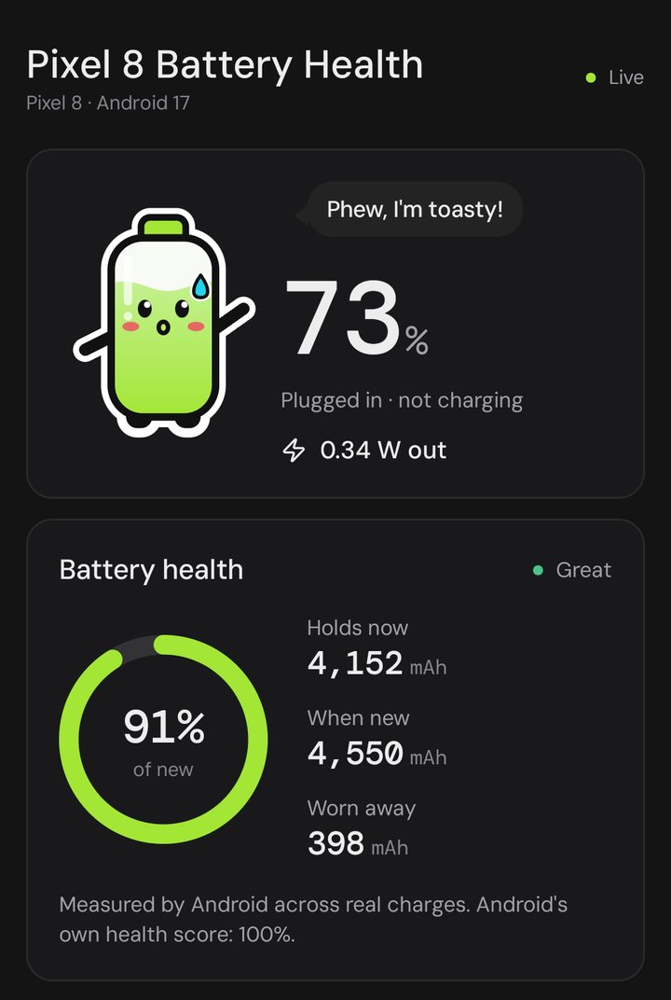

Pixel 8 Battery Health
A free Android app that shows how much charge your Pixel 8 battery still holds, how many charge cycles it has done, and what is draining it right now.

What the app shows
With readings from the author's Pixel 8 on Android 17
-
Battery health
How much charge the battery holds now compared with when it was new, as a percentage and in mAh, with the amount worn away.
91% · 4,152 of 4,550 mAh
-
Charge cycle count
The cycle count Android keeps for the battery, and how many cycles a day you average.
303 cycles · ≈ 0.7 a day
-
Live power
Watts in or out of the battery, averaged over 30 seconds so app-launch spikes don't mislead, with the peak and a two-minute graph. Also charging status, charger type and time until full.
0.34 W out · 30 s avg
-
Temperature, voltage, current
Battery temperature with a comfort hint, voltage, charge or drain current in mA, and charge stored right now.
41.4 °C · 4.08 V · 74 mA
-
Battery age
The date the battery was made, the date it was first used, and how long it has been in use.
made Dec 11, 2024 · 1 yr 3 mo in use
-
What is draining it
Since your last charge: how much went to mobile data, CPU, screen and GPU, and the top 5 apps, with how much each used while not on screen.
mobile data 49% · CPU 32% · screen 11%
How to check your Pixel 8 battery health
- On your phone, tap Download APK.
- Open the downloaded file. When Android asks, allow your browser to install apps.
- Open Pixel 8 Battery Health. Charge cycles, temperature and live power show right away, and the Battery health card shows an estimate.
- For Android's measured capacity, its health score, the battery dates and what is draining the battery, grant three permissions once from a computer (below).
How to see what is draining your Pixel 8 battery
- Grant the three permissions below once from a computer.
- Open the app and scroll to Since last charge. It lists what used the battery since you last charged: mobile data, CPU, screen and GPU, and the top 5 apps.
- Under each app, "while not on screen" shows how much of its use happened in the background. The numbers are Android's own estimate and refresh each time you open the app.
Turn on measured capacity and battery use with adb (optional)
Android keeps these readings behind system permissions that only a computer can grant. Turn on Developer options and USB debugging, install Android platform-tools, connect the phone and run:
adb shell pm grant dev.rubiks.batterybuddy android.permission.BATTERY_STATS
adb shell pm grant dev.rubiks.batterybuddy android.permission.DUMP
adb shell pm grant dev.rubiks.batterybuddy android.permission.PACKAGE_USAGE_STATS| Permission | Turns on |
|---|---|
DUMP and PACKAGE_USAGE_STATS | Battery capacity measured by Android across real charges (last, min and max), and the Since last charge card |
BATTERY_STATS | Android's battery health score, manufacture date and first-use date |
The grants stay through app updates. Uninstalling the app removes them. Without them, the app estimates health from the current charge.
Questions
How do I check battery health on a Pixel 8?
Install Pixel 8 Battery Health and open it. The Battery health card shows how much charge the battery holds now compared with when it was new, as a percentage and in mAh. For Android's own measured capacity, grant three permissions once with adb, as shown above.
How do I see the battery cycle count on a Pixel 8?
Open the app. The Readings card shows the cycle count Android keeps for the battery, plus your average cycles per day. It works without a computer on Android 14 and newer, which every Pixel 8 runs.
How do I see what is draining my Pixel 8 battery?
Grant the three adb permissions once, then open the app and scroll to Since last charge. It shows how much went to mobile data, CPU, screen and GPU since you last charged, and the top 5 apps with how much of each app's use happened while it was not on screen. The numbers are Android's own estimate.
Why does the power reading jump when I open an app?
Opening or switching apps spikes power for a few seconds, so a single one-second reading can look like heavy drain. The app shows a 30-second average as the main number, leaves out the spike from opening the app itself, and shows the current reading and the peak next to it. When the phone is plugged in but not charging, the charger covers part of the power, so the reading is only the battery's share, and the app says so.
What is the Pixel 8 battery capacity when new?
The app uses 4,550 mAh as the Pixel 8 design capacity and compares the measured capacity with it. For example, a Pixel 8 that holds 4,172 mAh is at 92% battery health.
How accurate is the health percentage?
With the adb permissions granted, the app uses the capacity Android measures across real charges and shows its range. Without them, it estimates the full capacity from the charge stored right now, which is rougher and only shown above 15% charge.
Does it need root?
No. The optional permissions are granted with adb from a computer. No root is needed.
Does it work on the Pixel 8 Pro, Pixel 8a or other phones?
It installs on any phone with Android 8.0 or newer and shows live readings. The design capacity is built in for the Pixel 8 only. On other phones the app reads it from Android's power profile, which has not been tested. The cycle count needs Android 14 or newer.
Is my battery data sent anywhere?
No. Battery readings and per-app battery use stay on the phone. The app shows a banner ad from Google AdMob, which uses the network. See the privacy policy.
How do I check the download is genuine?
Compare these with the APK you downloaded:
APK SHA-256: 237b9a90a66a81dc7405ec61aec82a7f056c21381eb561f192f338bfa2e53c71
Signing certificate SHA-256: f02d11df8b793a903a44286f3a3ede52c155cd09756d3c8578a22aac2df846ee